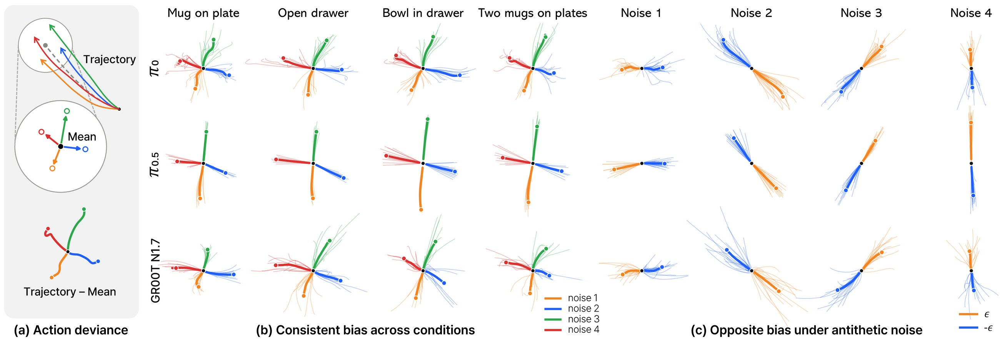
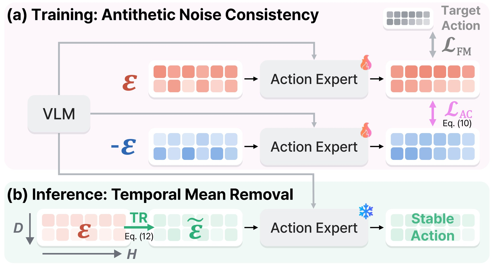
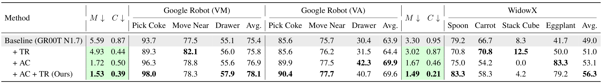
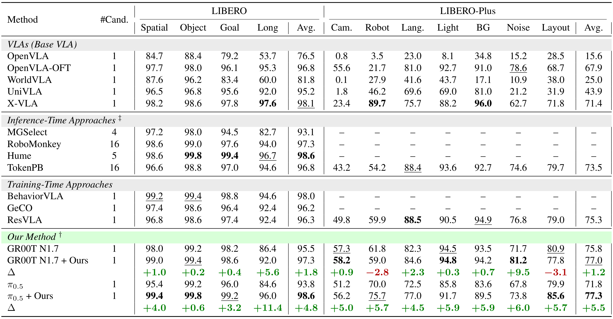

Abstract
Vision-language-action models (VLAs) have widely adopted diffusion-based action generation for continuous robot motions, enabling fine-grained control across diverse tasks. However, recent studies have shown that their performance is highly sensitive to initial noise, with resulting action errors that make recovery difficult during execution. Existing approaches search for favorable noise initializations to improve performance, yet the action expert itself remains sensitive to noise. In this work, we reveal that initial noise induces a consistent directional bias in action space that closely aligns with the noise’s temporal mean. We thus introduce a simple yet effective framework that improves robustness to initial noise through interventions during both training and inference. During training, we enforce consistent action predictions from antithetic noise pairs (ε, −ε) and, at inference, remove the noise’s temporal mean. Our method substantially reduces action deviation and improves task performance across simulation benchmarks. In real-robot experiments, our method increases the average task success rate of π0.5 from 40% to 68%, with more stable and consistent execution.
Video
Does Noise Induce Bias?

Method

Real Robot
✓ success · ✗ failure
Success Rate
Simulation


Rollouts
Same initial state for every variant. ✓ success · ✗ failure
LIBERO (π0.5)
SimplerEnv (GR00T N1.7)
BibTeX
@misc{lee2026epsilontilde,
title = {$\widetilde{\varepsilon}$: Does Initial Noise Induce Directional Bias in Vision-Language-Action Models?},
author = {Lee, Junmyeong and Shin, Dongmin and Jeon, Wooseok and Lee, JunGyu and Shin, Seunghyun and Jeon, Hae-Gon},
year = {2026}
}